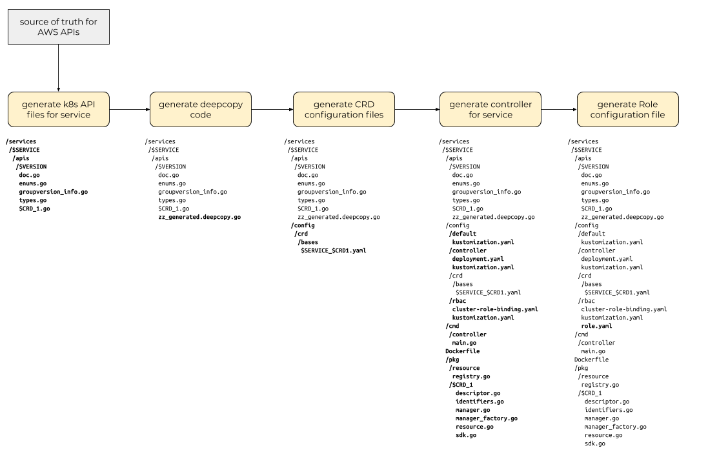

Code generation¶
In order to keep the code for all the service controllers consistent, we will use a strategy of generating the custom resource definitions and controller code stubs for new AWS services.
Options considered¶
To generate custom resource (definitions) and controller stub code, we investigated a number of options:
- home-grown custom code generator
- kudo
- kubebuilder
- a hybrid custom code generator +
sigs.kubernetes.io/controller-tools(CR)
The original AWS Service Operator used a custom-built generator that processed YAML manifests describing the AWS service and used templates to generate CRDs, the controller code itself and the Go types that represent the CRDs in memory. It's worth noting that the CRDs and the controller code that was generated by the original ASO was very tightly coupled to CloudFormation. In fact, the CRDs for individual AWS services like S3 or RDS were thin wrappers around CloudFormation stacks that described the object being operated upon.
kudo is a platform for building Kubernetes Operators. It stores state in its
own kudo.dev CRDs and allows users to define "plans" for a deployed application
to deploy itself. We determined that kudo was not a particularly good fit for
ASO for a couple reasons. First, we needed a way to generate CRDs in several
API groups (s3.aws.com and iam.aws.com for example) and the ACK controller code
isn't deploying an "application" that needs to have a controlled deployment
plan. Instead, ACK is a collection of controllers that facilitates creation and
management of various AWS service objects using Kubernetes CRD instances.
kubebuilder is the recommended upstream tool for generating CRDs and controller
stub code. It is a Go binary that creates the scaffolding for CRDs and
controller Go code. It has support for multiple API groups (e.g. s3.amazonaws.com
and dynamodb.amazonaws.com) in a single code repository, so allows for sensible
separation of code.
Our final option was to build a hybrid custom code generator that used controller-runtime under the hood but allowed us to generate controller stub code for multiple API groups and place generated code in directories that represented Go best practices. This option gives us the flexibility to generate the files and content for multiple API groups but still stay within the recommended guardrails of the upstream Kubernetes community.
Our approach¶
We ended up with a hybrid custom+controller-runtime, using multiple phases of code generation:

The first code generation phase consumes model information from a canonical
source of truth about an AWS service and the objects and interfaces that
service exposes and generates files containing code that exposes Go types for
those objects. These "type files" should be annotated with the marker and
comments that will allow the core code generators and controller-gen to do its
work. We will use the model
files from the
aws-sdk-go source repository as our source of
truth and use the aws-sdk-go/private/model/api Go package to navigate that
model.
Note
This step is the ack-generate apis command.
After generating Kubernetes API type definitions for the top-level resources
exposed by the AWS API, we then need to generate the "DeepCopy" interface
implementations that enable those top-level resources and type definitions to
be used by the Kubernetes runtime package (it defines an interface called
runtime.Object that requires certain methods that copy the object and its
component parts).
Note
This step runs the controller-gen object command
Next, we generate the custom resource definition (CRD) configuration files, one for each top-level resource identified in earlier steps.
Note
This step runs the controller-gen crd command
Next, we generate the actual implementation of the ACK controller for the
target service. This step uses a set of templates and code in the pkg/model
Go package to construct the service-specific resource management and linkage
with the aws-sdk-go client for the service. Along with these controller
implementation Go files, this step also outputs a set of Kubernetes
configuration files for the Deployment and the ClusterRoleBinding of the
Role created in the next step.
Note
This step runs the ack-generate controller command
Finally, we generate the configuration file for a Kubernetes Role that the
Kubernetes Pod (running in a Kubernetes Deployment) running the ACK service
controller. This Role needs to have permissions to read and write CRs of the
Kind that the service controller manages.
Note
This step runs the controller-gen rbac command